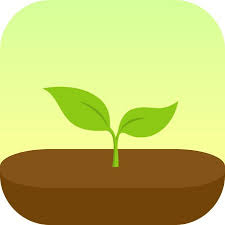
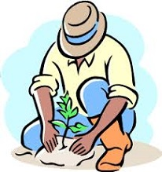

愛植樹協會
本社團的宗旨在於使更多人了解森林對人類的好處，以及生活在森林裡的小生命的重要性；進一步策發人們保護森林，積極投入種樹的行列。
森林有許多好處，可以調節氣候及雨量，能夠固定空氣中的二氧化碳，樹木的根部深入 地下，抓住土壤，使土壤不易被沖蝕，森林更提供許多生物棲息活動場所，因此，森林的好處多多，是無庸置疑的。
成立起源
根據聯合國糧農組織2010年的報告，地球的森林以每年平均520萬公頃（相當於1.4個台灣的面積）的速度急速減少；等於每秒有三分之一個足球場消失。森林的消失更加速全球暖化，導致全球性的氣候災變：洪水、乾旱、飢荒、熱浪。
有鑑於此，105年8月7日，由三個大學生在台北科技大學所組成的一個團體，以育苗、造林、護林為行動，一起為地球留住元氣。
